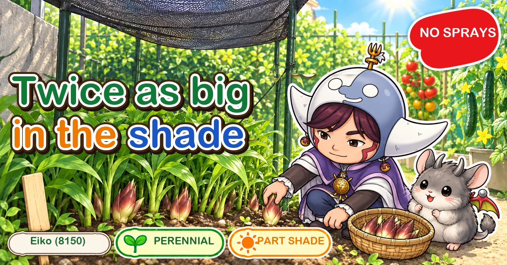
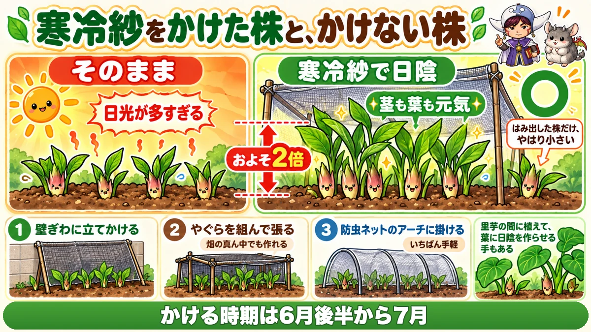
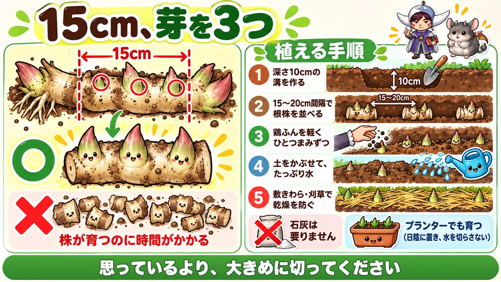
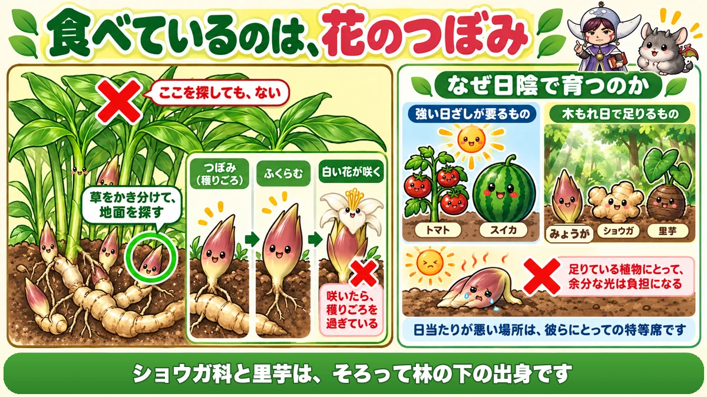

Myoga grows twice as big in shade 🌿 Plant it once and crop it for years

🌿 "There's a narrow strip on the north side I've never used."
🌿 "Mine only produces thin little ones."
🌿 "I can never work out where it comes up."
Hello, I'm Eiko. Eight years of growing vegetables organically and without pesticides, and a teaching licence in science.
Ginger was happy in part shade. This one goes further.
The point, up front:
The more shade you give myoga, the bigger it gets.
A plant under shade netting came out roughly twice the size of one beside it without 🌿
The basics
- Family: ginger family — a perennial
- Plant: late winter to early spring, before the new shoots move
- Harvest: midsummer into early autumn
Plant once, crop for years
The great attraction: it's perennial. No replanting each year, and it crops in the same place for several seasons.
Not entirely hands-off, though: left completely alone the yield falls. Lift, divide and replant about every three years.
And like ginger, almost no pests or disease — one of the easiest crops there is to grow without sprays.
Shade doubles it

What this diagram says （図解の文字）
- Plants under shade netting, and plants without
- Left as it is — too much light ／ roughly twice the size
- ○ shaded with netting — stems and leaves both vigorous
- Only the plants sticking out beyond the net were small
- 1 lean the net against a wall ／ 2 build a frame and stretch it — you can make shade in the middle of a plot
This was an actual comparison. Shoots emerging at the same time; shade netting over half of them.
Result: the shaded ones were about twice the size, with visibly stronger stems and leaves.
And the telling detail: the plants that stuck out beyond the edge of the netting were small — in the same bed, right beside the others. The amount of light showed up directly as size.
When to put it on
Through the period when the sun is strongest, which is also when myoga is bulking up.
Three ways to make the shade
- Against a wall — just lean the netting against it
- In the middle of a plot — build a frame, as for cucumber netting, and stretch the net over
- The easy option — hoops over the bed with shade net or black insect netting laid over
The third is the least work: hoops in, net on top.
Dividing is the part that matters

What this diagram says （図解の文字）
- 15 cm, with three buds
- ○ 15 cm ／ × cut too small — the plant takes longer to establish
- 1 make a trench 10 cm deep ／ 2 lay the rhizomes 15–20 cm apart ／ 3 a light pinch of poultry manure each ／ 4 cover and water well ／ 5 straw or cut grass to stop it drying
Plant before the new shoots move. Rhizomes appear in shops in late winter and early spring.
If you're dividing an existing clump, dig it up while the top growth is gone, then cut it with two conditions:
- pieces about 15 cm long
- about three buds on each
Don't cut it too small
The usual mistake is chopping it finely to make more plants. Small pieces take much longer to build into a cropping clump.
15 cm is longer than it sounds. Cut bigger than feels right.
Planting
- A trench 10 cm deep
- Rhizomes laid 15–20 cm apart
- A light pinch of poultry manure each
- Cover, and water thoroughly
- Straw or cut grass on top against drying
And one job you can skip: myoga doesn't need lime. The exact opposite of chrysanthemum greens. One less step.
It grows in containers
Two conditions only: keep it shaded, and don't let it dry out. A north-facing balcony — the space most people can't use — works.
Summer care is minimal
Feed once, and only once
One feed, early in the season, and that's the lot.
- low nitrogen (poultry manure, higher in phosphorus and potassium)
- scattered around the plant, on the surface
- about 10 ml, a small handful
No need to dig it in. That's enough for myoga.
Water generously
Here, don't economise. "Possibly too much" is about right. Running water along between the beds is easiest — aim to keep the paths permanently damp.
Leave the weeds at the base
Pleasingly, weeds around the crown can stay. They cover the ground and keep the soil temperature down. Cut grass or dried crop residue laid at the base does the same.
Thin it when it crowds
After a few years the clump becomes dense. Thin with scissors to about 8 cm between shoots. Air movement improves the whole plant.
The science: what you're eating is a flower bud 🔬

What this diagram says （図解の文字）
- What you're eating is a flower bud
- × looking up here won't find it — part the weeds and look at the ground
- Bud (ready) → it swells → a white flower opens ×
- Once it flowers, it's past its best
- Why it grows in shade — strong sun…
What you eat is an unopened flower bud.
Which is why you look at the ground
The buds come directly off the rhizome, at soil level. Searching among the upper leaves finds nothing.
Part the weeds gently at the base of the clump and look at the ground.
Opened is too late
A bud left alone flowers, and once it flowers the texture goes.
A white flower showing means you've missed it. In summer, look every few days.
And why shade works
Plants fall broadly into two groups:
- those that need strong sun — tomatoes, watermelons
- those for which dappled light is enough — myoga
Myoga is a woodland-floor plant.
For a plant that gets by on dappled light, full summer sun is simply too much. Leaves scorch, water is pulled out of it, and it weakens.
Shade netting doubles it because it removes the surplus light.
To sum up
- ✅ Ginger family, perennial — plant once and crop for years
- ✅ Divide and replant about every three years
- ✅ Almost no pests or disease
- ✅ Shade netting roughly doubles the size
- ✅ Shade it through the strongest sun, while it bulks up
- ✅ Wall, frame, or hoops with net over — the last is easiest
- ✅ Or plant it among taro and let the leaves do it
- ✅ Divide into 15 cm pieces with about three buds
- ✅ Small pieces take far longer to establish
- ✅ 10 cm trench, 15–20 cm apart, light feed, water well, mulch
- ✅ No lime needed
- ✅ Feed once; water generously; leave the weeds at the base
- ✅ Thin to 8 cm when it crowds
- ✅ You eat the flower bud, and it comes up at soil level
- ✅ A white flower means you're too late
- ✅ It's a woodland plant, so summer sun is surplus light
You don't have to do all of it. Put a hoop and a piece of shade net over whatever you already have. The difference by the end of summer is not subtle 🌿
Thank you for reading!